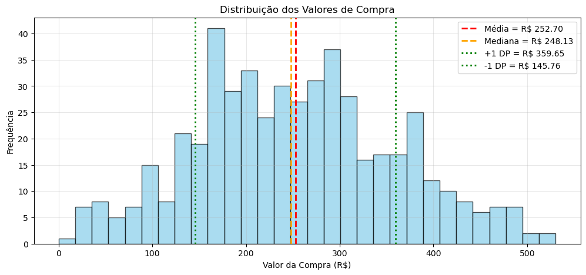
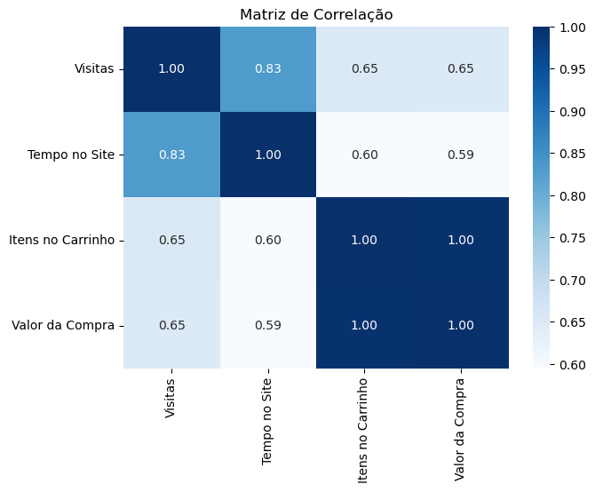

Neste projeto, mergulhamos nos dados de um e-commerce fictício para responder uma pergunta vital: o que
diferencia um comprador fiel de um visitante curioso? Utilizando apenas o poder matemático do NumPy,
transformamos 500 registros de navegação em uma bússola estratégica para marketing e UX.

Distribuição dos Valores de Compra
Análise de ticket médio (R$ 252,70) e dispersão da
receita por cliente.

Vatores de Engajamento
Matriz de correlação destacando a relação entre tempo
de site e valor total gasto.
Insights de Negócio
🎯
Segmentação de Alto Valor: Clientes que gastam acima de R$ 250 visitam a
plataforma 33 vezes por mês em média.
⏳
Tempo no Site: Existe uma correlação de 0.83 entre tempo de permanência e número
de visitas, indicando que sessões mais longas retroalimentam o desejo de retorno.
📉
Oportunidade de Remarketing: Visitantes que não compram ficam apenas 15 minutos.
Sessões que cruzam essa barreira temporal mas não convertem devem receber pop-ups de incentivo.